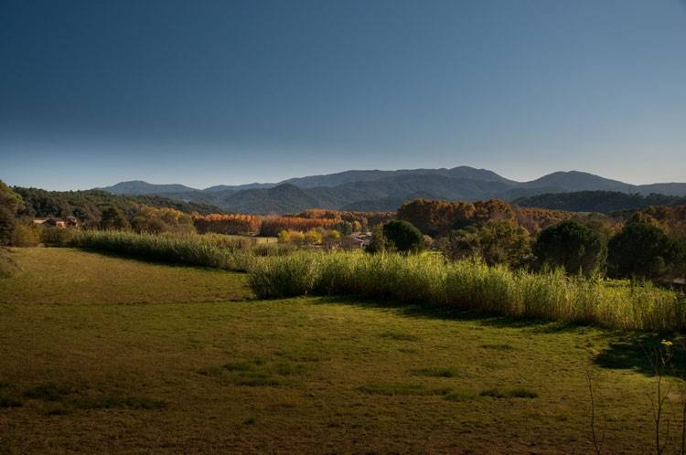

Ruta · Gualba
Gran volta que, pujant a Can Mata, passa per dalt les carenes de les serres de ponent fins a baixar a can Cambó i ca n’Amat . Creuarem ambients forestals, on les pinedes ocupen el lloc d’antigues…